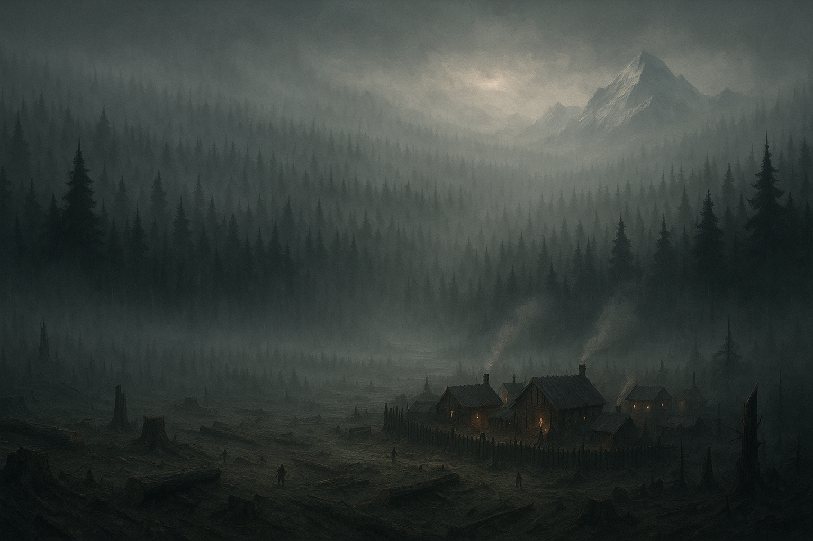

Eirath Adventures¶

A thousand years ago the Celestial Armies and the Demonic Legions came to Eirath to fight over it. Neither of them asked the world's permission. So the world fought back — indiscriminately, against both — and when the War of Dominion finally guttered out, gods lay dead on either side and the blood of angels, demons, and primordials had soaked so deeply into the soil that it began, in time, to grow people. Every mortal race of Eirath is what that war left behind.
The war is over. The wounds are not. Battlefields still split open into Splinters — raw planar wounds that vent vengeful celestials and raving demons into the countryside. The center of the world is unmapped, and the scholars who fund expeditions into it rarely see their expeditions come home. Most people never go looking. They farm, they fish, they cut timber, and they stay as far from the old battle-sites as a living can be made.
The party is not most people. This is their record — who they are, what they've done, and the world that keeps testing them.
The Graylight Veil¶
The trees of the Graylight Forest grew back after the war. Something else stayed. A demonic taint is woven into the air itself, and the result is a permanent low haze that bends light and memory. Travelers cough, lose their footing on paths they've walked for years, hear whispering in the branches, and cannot shake the certainty that they are being followed through empty clearings.
The locals do not call it a curse. A curse can be lifted. They call it the Graylight Veil, and they live with it, the way you live with a scar.
Timberfall¶
On the forest's western edge stands Timberfall, a frontier logging town founded by five noble families who all wanted the same thing: the right to cut the Graylight down and sell it. It has not gone the way they planned. Felled trees regrow overnight. Wood creaks at night in something too close to voices. Supply routes wander off the map. And still the families send more laborers in — among them the Silverbriers, who are cheap, careless, and famous for sending untrained people deeper into the woods than anyone should go.
What Timberfall has to offer is thin: a bad ale at The Fat Goat, empty shelves at Ol' Marnie's, and the small, poor Church of the Dawn, whose healer gives away his potions rather than sell them. Some say the town is not harvesting the forest. They say the forest is testing the town.
The Wider World¶
North of the Graylight, past the Frost Horn Mountains, the fortress-nation of Gil'Serith judges every outsider who approaches and admits almost none — mithral-rich GoldHearth carved into the mountain, Frost Ring City filtering the world at its gate, and Fort Stillwater, a prison that pays down its inmates' sentences in expeditions nobody expects them to survive.
South, the Cinderspire Mountains are not mountains at all but the fossilized spine of a slain demon leviathan, still faintly warm, still faintly breathing. Its maw tore the Hellmouth into the world and the world has been bleeding there ever since. Around it: the tar-clan city of Blackfoot, the treacherous Tiefling councils of Emberhold, the scavenger-metropolis of Allsbhaad stacked out of celestial wreckage, and far east, Bastion, the last town before the Valley of the Dead Gods.
All of it is reachable. Almost none of it is safe.
The Party¶
Grano, Icarus, Vorhan Aru Nyshara, and Wilonet — four people who found each other in Timberfall with nothing much between them but a job nobody sane would take.
The wiki has the people and the places. The sessions below have what happened to them.
Sessions¶
| # | Session | Date |
|---|---|---|
| 1 | Twelve Missing | 2026-07-05 |
| 2 | I Think We're Still Here | 2026-07-19 |